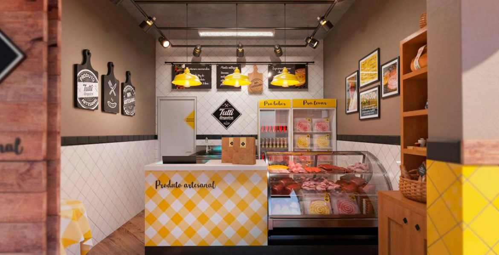
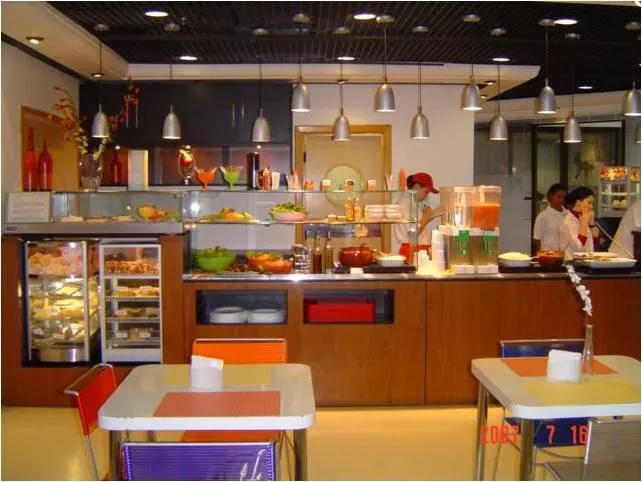

Restaurante Salshiça e linguinças Eduardo e Victor.
Vedemos vários pratos de nossa autoria, comidas clássicas que somente nós mesmo fabricamos!.
Aqui nos vendemos linguinça, salsicha e balcons, mas n da forma tradicional,vendemos tudo isso dentro de coxinhas.

Nós nos encontramos nas rua dos bagos, numero 165, perto ao metro Trianon-Masp.

Também temos outra filial perto da Estação Vila Prudente.